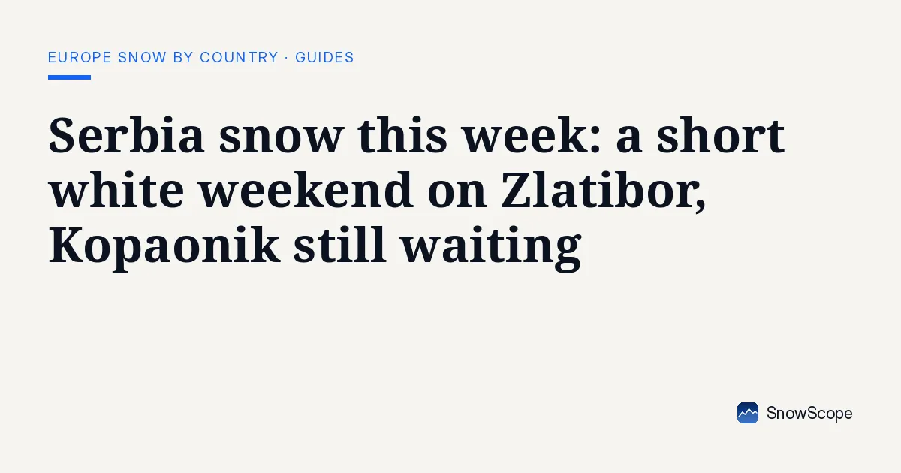
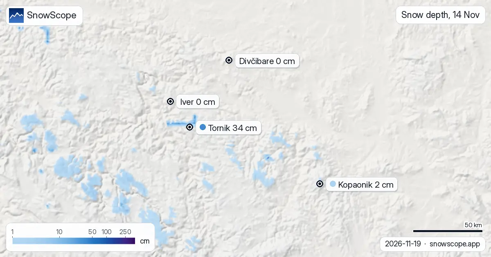

Serbia snow this week: a short white weekend on Zlatibor, Kopaonik still waiting
Serbia's snow this week came, piled up on one mountain and left again. Western Serbia got the most: on Sunday 15 November the upper slopes of Tornik, Zlatibor's ski area, had 39 cm of snow. Three days later it was gone. Kopaonik, the country's biggest ski area, only saw a light dusting, and on Thursday 19 November no Serbian ski area has snow on the ground.
See the live snow forecast for Serbia in the SnowScope appSnow depth, powder alerts and the 3D map, free.
Zlatibor: the snowiest corner
The snow that whitened Bosnia and Croatia on Friday 13 November also reached the hills of western Serbia. Tornik, whose lifts climb to 1,486 m above the Ribnica lake, went from 3 cm on its upper slopes on 13 November to 34 cm on Saturday 14 November and 39 cm on Sunday 15 November, the deepest snow anywhere in Serbia this week.
It did not last. By Monday 16 November there were 29 cm left, 5 cm on Tuesday 17 November, and the slopes were bare on Wednesday 18 November. That is a white weekend, not the start of the season, but it shows how quickly Zlatibor's higher ground can change.

What the towns measured
In town the cover was thinner but real. The weather station in Zlatibor, at 1,029 m, measured 11 cm of snow on Saturday morning, 14 November, and 9 cm on Sunday. On Monday the ground was bare again. Sjenica, on the high Pešter plateau at 1,039 m, had 6 cm on Saturday and 4 cm on Sunday, then nothing.
The station on Kopaonik, at 1,713 m, tells the other half of the story: bare ground on Saturday, 2 cm on Sunday 15 November, bare again on Monday. The lowlands, from Novi Sad and Sombor to Kikinda, did not see lying snow at any morning reading of the week.
Kopaonik and the east
Kopaonik is high, with lifts up to 1,975 m, but it sat on the edge of this storm. Its upper slopes had about 2 cm of new snow on Saturday 14 November and 2 cm on the ground that day, and nothing since. Stara planina, near the Bulgarian border with lifts to 1,754 m, stayed bare all week, as did Divčibare, the ski hill near Valjevo that tops out at 1,088 m.
The smaller areas of the south-west, Iver and Putevi near Nova Varoš, saw a few centimetres of fresh snow on 13 and 14 November but nothing that stayed.
Why the snow went so fast
Mid-November snow in Serbia usually falls on warm ground, at moderate heights, and it rarely survives the first sunny or mild day. Tornik's top lift is at 1,486 m and the weather station in Zlatibor town at 1,029 m: that is a good height for the first snow of the season but too low to keep it for long without steady cold.
The pattern this week was a cold blast from the north-west on Friday followed by milder air from Monday. Until December brings longer cold spells, every snowfall here is a few days' gift.
The week ahead: little to come
The coming days do not bring a repeat. Friday 20 November is dry. Saturday 21 November could give up to 3 cm at the top of Kopaonik in the highest forecast, but the middle forecast keeps it dry. Monday 23 November brings a trace to Stara planina, about 1 cm, and Thursday 26 November about 1 cm on Tornik and Kopaonik in the highest forecasts.
For the whole week from 20 to 26 November the middle forecast gives about 1 cm on the upper slopes of Kopaonik (0 to 5 cm) and Stara planina (0 to 1 cm), and nothing on Tornik (0 to 2 cm) or Divčibare (0 to 1 cm). In other words: no new snow worth the drive before the end of the month.
If you are planning to ski
Kopaonik and Stara planina rely on their own snow to open, so the first runs will depend on cold nights rather than on storms like last weekend's. Check the resorts' own channels before booking, and keep an eye on the forecast at the end of November.
If you want natural snow now, the nearest options are higher and further west: Durmitor in Montenegro still has a thin cover on Savin Kuk, and Slovenia's Julian Alps have fresh snow today. Bosnia and Herzegovina is bare and expecting snow later next week.
Tips for skiers
- Last weekend's snow on Zlatibor melted by Wednesday 18 November; all Serbian ski areas are bare today.
- Little new snow is expected until 26 November, at most a few centimetres on Kopaonik.
- Check Kopaonik's and Stara planina's own channels for opening news.
More maps (external sites)
- Live snow map on SnowScope
- Bosnia and Herzegovina snow report, 19 November
About these numbers
Snow on the slopes: the upper slopes of each ski area on SnowScope's daily snow map. Measured snow: weather stations, read at 07:00 local time. Coming snow: the lowest, middle and highest forecast for each resort's top lift.
Cite this report
For research, teaching or the press: the numbers and charts are free to reuse under CC BY 4.0 with this citation.
SnowScope (2026), Serbia snow this week: a short white weekend on Zlatibor, Kopaonik still waiting, https://snowscope.app/blog/en/2026/11/serbia-snow-zlatibor-kopaonik-this-week-19-november-2026.html, accessed 2026-11-19
SnowScope (Atlas Labs). (2026, November 19). Serbia snow this week: a short white weekend on Zlatibor, Kopaonik still waiting. SnowScope snow reports. https://snowscope.app/blog/en/2026/11/serbia-snow-zlatibor-kopaonik-this-week-19-november-2026.html
BibTeX
@misc{snowscope2026serbiasnowzlatiborkopaon,
author = {{SnowScope (Atlas Labs)}},
title = {Serbia snow this week: a short white weekend on Zlatibor, Kopaonik still waiting},
year = {2026},
month = nov,
howpublished = {\url{https://snowscope.app/blog/en/2026/11/serbia-snow-zlatibor-kopaonik-this-week-19-november-2026.html}},
note = {Published 2026-11-19 21:45 UTC; accessed 2026-11-19}
}· CC BY 4.0 · Methods, data and tools →
Follow Serbia
Free: a message when fresh snow is coming, and the forecast every morning.
More snow reports

Norway's snow cover is growing fast. Up to 39 cm of new snow is forecast over the next seven days, with the heaviest fall on November 20.

Rapid snow loss across Italy on 17 November as temperatures rise. Only 12,540 km² remains covered, down from 21,210 km² yesterday. The Aosta Valley saw 134 cm of new snow in 72 hours.

UK gained 8,380 km² of snow cover by 17 November. The North Pennines led with 27 cm in 72 hours.